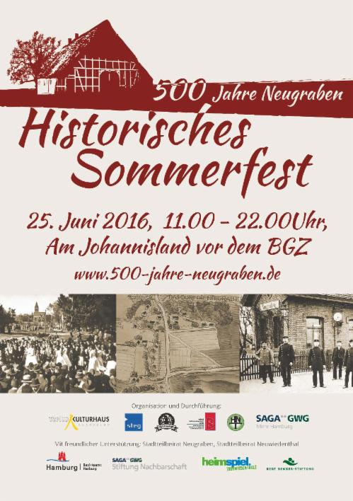

Historisches Sommerfest
am Sonnabend, den 25. Juni 2016, 11 bis 22 Uhr


Neugraben ist seit 500 Jahren nachweislich besiedelt.
Dieses Jubiläum wird am Sonnabend, den 25.6.2016, von 11 bis 22 Uhr auf der großen Wiese vor dem Bildungs- und Gemeinschaftszentrum Süderelbe (BGZ) zünftig gefeiert. Der Park ist gut zu erreichen; er liegt direkt am S-Bahnhof Neugraben und einem P+R Parkhaus.
Was mit Gödeke Tiedemann 1516 seinen Anfang nahm, hat sich bis heute zu einem wachsenden Stadtteil der Hansestadt Hamburg entwickelt. Bürger aus unterschiedlichen Bevölkerungsgruppen haben hier neben den Familien aus dem bäuerlichen Kern des alten Dorfes ein Zuhause gefunden.
Mit dem Festtag wird die Entwicklung der Region auf spannende Weise für alle Besucher erlebbar gemacht. Neben unterhaltsamen Präsentationen im Bühnenprogramm werden die besonders eingängigen historischen Ereignisse der Region in kleinen Darstellungsbereichen vorgestellt. Ob bäuerliches Leben, ein Blick ins Klassenzimmer der Jahrhundertwende, die Wirtschaftswunderzeit mit Eventgastronomie, Kutschfahrten oder der Kinder- und Familien-Spaßbereich: Es gibt Spannendes zu erleben! Inszenierungen, ansprechende Dekorationen, historische Informationen und „Geschichte zum Anfassen“ laden zum Mitmachen und Weiterbilden ein. „Mittendrin statt nur dabei!“ ist hier ganz klar das Motto.
Gemeinsam mit vielen Institutionen, Vereinen, Schulen und Neugrabener Bürgern wird es Theater und Tanz, Musik und Kulinarisches, Artistik und Bands geben. Organisiert und ausgerichtet wird das Fest durch das Kulturhaus Süderelbe in Kooperation mit der steg Hamburg, SAGA GWG, der HNT (Hausbruch-Neugrabener-Turnerschaft) und den Firmen Freyhand und Bobeck-Medien.
Mit finanzieller Unterstützung vom Bezirksamt Harburg, SAGA GWG „Stiftung Nachbarschaft“, Heimspiel Neuwiedenthal (Joachim-Hertz-Stiftung), den Verfügungsfonds Neugraben und Neuwiedenthal und der Kurt Denker-Stiftung, können Akteure wie die Loki Schmidt-Stiftung und lokale Größen wie der Ring für Heimattanz, der Pfadfinderstamm „Ulrich von Hutten“, das Süderelbe-Archiv, ProQuartier, die Freunde der Tempofahrzeuge und der Verein Plattdüütsch leevt – nur ein paar Beispiele aus der Reihe der Teilnehmenden – mit allen Besuchern in den Festtag starten. Viel Buntes und jede Menge Spaß sind garantiert!
Kommen Sie und feiern Sie mit!
Vorläufiges Festprogramm
- 11.00 Uhr
- Öffnung des Veranstaltungsgeländes
- 11.30 Uhr
- Ansprache durch Herrn Völsch (Bezirksamtsleiter Harburg) und Veranstalter
- 11.45 Uhr
- Öffnung der Erlebnis- und Informationsbereiche
- 13.00 Uhr
- Traditionelle Blasmusik vom Musikzug Fischbek
- 14.30 Uhr
- Theateraufführung des Gymnasiums Süderelbe
- 16.00 Uhr
- Chorgesang des MGV Sängerlust Scheideholz von 1919 mit dem Damenchor Hamburg-Neugraben von 1951
- 18.00 Uhr
- Band „Trio Kosmopolka"
- 20.00 Uhr
- Hauptband „Frölich Geschray" mit Mittelalterfolk
- 21.30 Uhr
- Feuershow mit Jonglage und Akrobatik
- Bis 23.00 Uhr
- Ausklang der Veranstaltung in der Gastronomie „Willkommen im Wirtschaftswunder" im Stil der 50er und 60er Jahre